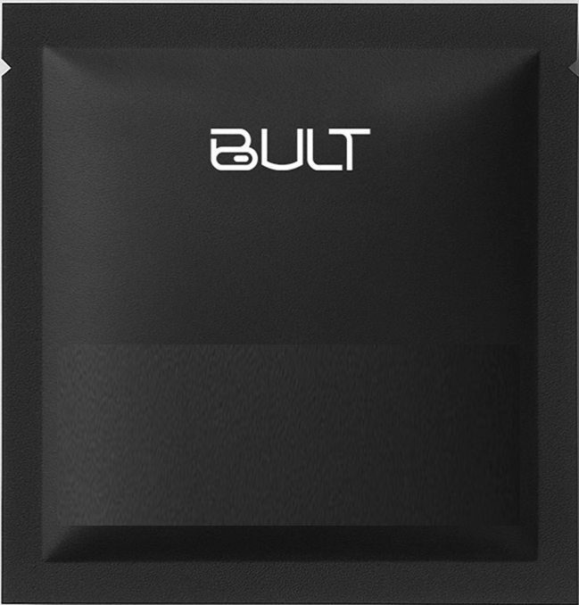

Core
Energy & Immunity
Essential vitamins and minerals to support energy metabolism and immune function.*
| Vitamin D | 50 mcg |
| Zinc (picolinate) | 30 mg |
| Magnesium | 60 mg |
| Folate (L-5-MTHF) | 600 mcg |
| B12 (methylcobalamin) | 25 mcg |
Men's all-in-one nutrition

MEN'S DAILY2 Core capsules
3 Vitality capsules
2 Ωmega softgels
No proprietary blends*
Made in the U.S.A.
A higher standard for men's health
One pack · seven capsules · once a day
Energy & Immunity
Essential vitamins and minerals to support energy metabolism and immune function.*
| Vitamin D | 50 mcg |
| Zinc (picolinate) | 30 mg |
| Magnesium | 60 mg |
| Folate (L-5-MTHF) | 600 mcg |
| B12 (methylcobalamin) | 25 mcg |
Testosterone & Libido
Targeted ingredients to support male libido, healthy testosterone function and daily drive.*
| L-Citrulline Malate | 1 g |
| KSM-66® Ashwagandha | 400 mg |
| Maca Root | 150 mg |
| Asian Ginseng | 100 mg |
| Epimedium | 80 mg |
Heart & Brain
Essential omega-3s to support heart, brain and long-term wellness.*
| Fish oil (anchovy) | 750 mg |
| EPA | 370 mg |
| DHA | 150 mg |
| Sunflower lecithin | 1,200 mg |
*Every dose listed. The pre + probiotic blend in Core (100 mg) is the one blend, per BULT's FAQ.
Five benefits · one daily ritual
The 90-day foundation
Support natural energy and mental focus, so you take on the day sharper.*
Support healthy testosterone function, libido and male vitality.*
Energized. Sharp. Driven. Confident. Now make it yours.*
Note for BULT: homepage uses 1–30/30–60/60–90+, product page uses 1–45/45–90/90+. Pick one before launch.
The science
No hidden doses. Bioavailable forms: methylcobalamin, L-5-MTHF folate, P-5-P B6, zinc picolinate, magnesium glycinate + citrate, MK-7. Third-party claims review by Keller and Heckman; COAs available on request.
Read the research library →Expert advisors
“It brings clinical rigor to a simple daily routine. The dosing is appropriate, the forms are bioavailable, and it avoids the clutter and guesswork I see in most supplement routines.”
“It keeps things simple, covers the essentials, and supports consistent energy and resilience without relying on quick fixes.”
Your daily routine, simplified
Already portioned, ready to go.
Any meal, with water.
A few seconds a day. One less thing to think about.
Your first 30 days
$69 $112
Then $89 every 30 days · $2.30/day month one
$112
30 pouches · no subscription · $3.73/day
★★★★★ What men are saying
“With work, kids, training, and travel my schedule is all over the place. BULT fits into real life. I have felt steadier during the day, sharper in the afternoon.”
“I have tried the whole supplement stack before, but I always fell off. BULT made it simple. One pouch in the morning and I'm done.”
“It does not feel like another complicated health project. It's simple and easy to stay consistent.”
Take it daily for a month. If it's not for you, email support@bult.com for a full refund on your first order. Keep the pouches. No return shipping.
Questions
A once-daily supplement system for men. One pouch holds five capsules and two softgels across three formulas — Core, Vitality and Ωmega — replacing the typical five-bottle routine.
Take the full pouch once a day with a meal and water. Fat-soluble vitamins and omega-3s absorb better with food.
Most men report subtle changes in energy, focus and recovery within two to four weeks. Sleep, training and consistency drive the timeline.
No. Ωmega softgels contain anchovy fish oil and capsules use gelatin.
Yes. Skip, pause or cancel anytime, with a reminder before every renewal.
If you take medication or have a medical condition, talk to your healthcare provider before starting any supplement.
The Journal
Placeholder headlines drawn from BULT's founder story and FAQ; final articles to be written.